App aufs Telefon holen
Die Mitglieder-App gibt es auf drei Wegen. Alle drei können dasselbe und brauchen dasselbe Vereinskonto:
- Android: aus dem Play Store oder als Datei.
- iPhone: vorerst im Browser, als «Mein Bereich» auf der Website.
- Computer und Tablet: im Browser unter fwv-raura.ch/mein.html — siehe nächstes Kapitel.
Android über den Play Store
Die App liegt im Play Store, aber noch als geschlossener Test. Das heisst: Sie ist nicht öffentlich zu finden. Freischalten kannst du dich selbst — zwei Links, in dieser Reihenfolge, am besten direkt auf dem Telefon.
- Der Testgruppe beitreten: groups.google.com/g/fwv-raura-app öffnen und auf Gruppe beitreten tippen.
- Tester werden: play.google.com/apps/testing/com.fwv.members öffnen und auf Tester werden tippen.
- Auf derselben Seite auf Bei Google Play herunterladen tippen und die App installieren. Updates kommen danach wie bei jeder anderen App über den Play Store.
Android ohne Play Store: die Datei direkt laden
Dieser Weg braucht keine Freischaltung. Dafür fragt Android beim Öffnen, ob es Apps aus dieser Quelle installieren darf. Das musst du einmal erlauben, danach läuft es wie bei jeder anderen App.
Mit dem Telefon scannen — der Code führt direkt auf die Installationsdatei.
github.com/Feuerwehrverein-Raura/Homepage/releases/download/members-latest/members-latest.apk
iPhone
Im App Store ist die Mitglieder-App noch nicht. Bis es so weit ist, öffnest du sie in Safari: fwv-raura.ch/mein.html. Dort läuft genau dieselbe App, mit denselben Reitern und Knöpfen. Die Bilder in dieser Anleitung passen also auch dort.
Im Browser: «Mein Bereich»
«Mein Bereich» auf der Website ist die Mitglieder-App. Du findest ihn oben in der Navigation der Website oder direkt unter fwv-raura.ch/mein.html. Alles in dieser Anleitung geht dort genauso.
Bist du auf der Website angemeldet, bist du es auch in «Mein Bereich» — und umgekehrt. Es ist dasselbe Vereinskonto.
Was auf grossen Bildschirmen anders aussieht
- Die Reiter stehen links als Leiste statt unten.
- Musik hat dort einen eigenen Eintrag. Für den Vorstand auch Gruppen.
- Was auf dem Telefon Mehr heisst, heisst hier Einstellungen.
- Die Anleitungen stehen bei einem breiten Fenster unten links unter Hilfe.
Auf dem Telefon im Browser sieht «Mein Bereich» aus wie die App: die Reiter unten, Musik, Gruppen und Hilfe unter Mehr.
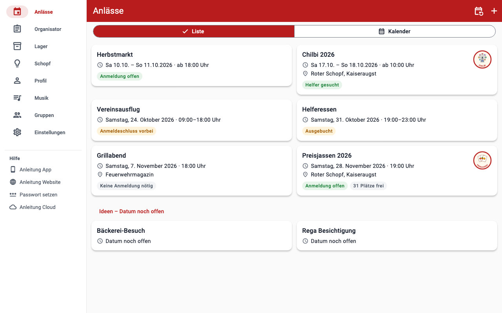
Die Reiter auf einen Blick
Unten in der App stehen die Reiter. Nicht alle sehen alle. Die App blendet nur ein, was für dich gilt — du musst nichts einschalten.
| Reiter | Was drin ist | Wer ihn sieht |
|---|---|---|
| Anlässe | alle Anlässe, Kalender, Anmelden | alle |
| Organisator | deine Anlässe mit den Anmeldungen | wer einen Anlass organisiert |
| Lager | Artikel, Lagerorte, Ausleihen | Gruppe Lager und Vorstand |
| Schopf | Licht, Messwerte und Musik im Roten Schopf | Gruppe Roter Schopf und Vorstand — und alle während ihrer eigenen Schicht |
| Profil | deine Angaben, Anmeldungen, Zugänge, Ausleihen | alle |
| Mehr | Musik, Newsletter, Adressbuch, Hilfe, Abmelden | alle |
Die meisten Mitglieder sehen also drei Reiter: Anlässe, Profil und Mehr.
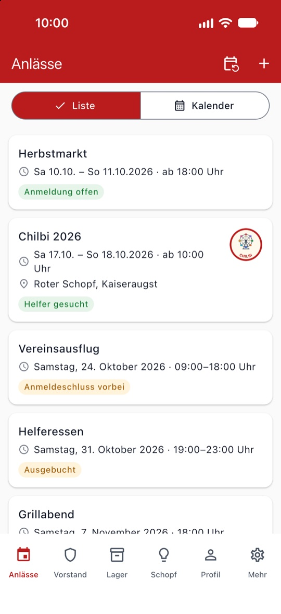
Anmelden
Du meldest dich mit deinem Vereinskonto an. Es ist dasselbe wie auf der Website und in der Cloud (Nextcloud).
Mit dem Vereinskonto
- Oben ist der Reiter Mitglied gewählt. Auf Mit Vereinskonto anmelden tippen.
- Fragt das Telefon, ob die App die Anmeldung verwenden darf: Fortfahren.
- Benutzername oder E-Mail und Passwort eingeben.
- Fertig. Die App bringt dich zurück und zeigt die Anlässe.
Die App merkt sich die Anmeldung. Benutzt du sie mindestens einmal innert 30 Tagen, bleibst du angemeldet.
Mit QR-Code
Keine E-Mail, oder ist dir die Anmeldung zu umständlich? Dann druckt dir der Vorstand ein Mitglieder-Datenblatt mit einem Login-Code.
- Oben auf den Reiter QR-Code tippen.
- QR-Code scannen tippen. Beim ersten Mal fragt das Telefon nach der Kamera — erlauben.
- Den Code auf dem Blatt vor die Kamera halten. Fertig.
Externe Organisatoren
Organisierst du einen Anlass, bist aber nicht Mitglied? Dann tippst du ganz unten auf Externer Organisator? Hier anmelden und gibst E-Mail und Passwort ein, die du für deinen Anlass bekommen hast. Mitglieder melden sich immer mit dem Vereinskonto an — auch wenn sie organisieren.
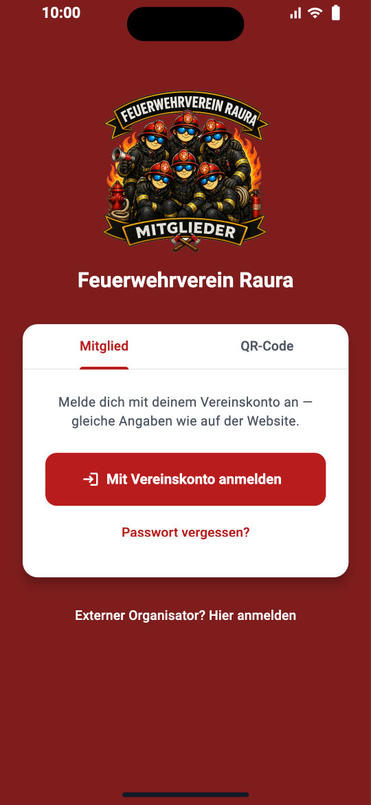
Passwort vergessen
Es gibt nur ein Vereins-Passwort — dasselbe für App, Website und Cloud. Zurücksetzen kannst du es selbst.
Auch wenn du noch nie eines hattest: Der Verein verschickt keine Passwörter. Wer sich zum ersten Mal anmeldet, geht denselben Weg und setzt so sein erstes Passwort.
In der App
- Auf dem Anmeldebildschirm auf Passwort vergessen? tippen.
- Die E-Mail-Adresse eingeben, die der Verein von dir hat, und Code anfordern tippen.
- Im Posteingang nachsehen. Dort steht ein Zahlencode.
- Den Code aus der E-Mail und zweimal das neue Passwort eingeben, dann Passwort setzen. Danach bist du gleich angemeldet.
Auf der Website
Sitzt du am Computer, geht es auch über die Anmeldeseite: unten auf Benutzername oder Passwort vergessen? klicken, die E-Mail-Adresse eingeben und dem Link in der E-Mail folgen.
Ausführlicher steht das in der Anleitung zum Passwort.
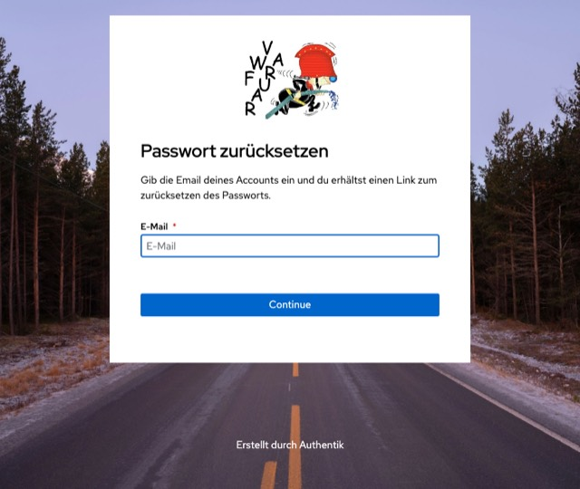
Anlässe finden
Der Reiter Anlässe zeigt, was im Verein ansteht. Oben schaltest du zwischen Liste und Kalender um.
Liste
Jede Karte zeigt Titel, Datum und Ort. Darunter steht ein farbiger Vermerk, zum Beispiel:
- Helfer gesucht — es gibt Schichten mit freien Plätzen.
- Anmeldung offen — du kannst dich als Gast anmelden.
- Anmeldeschluss vorbei oder Ausgebucht — anmelden geht nicht mehr.
Ganz unten stehen Ideen, für die es noch kein Datum gibt.
Kalender
Der Kalender zeigt einen Monat. Ein roter Punkt unter einem Tag heisst: An diesem Tag ist etwas los. Mit den Pfeilen blätterst du. Unter dem Kalender stehen die Einträge des Monats. Tippst du einen Tag an, stehen dort nur noch die Einträge dieses Tages.
Kalender abonnieren
Oben rechts das Kalender-Symbol: Kalender abonnieren. Dann stehen alle Anlässe in deiner eigenen Kalender-App und bleiben von selbst aktuell.
- iPhone: In der Kalender-App abonnieren tippen — fertig.
- Google Kalender: Link kopieren, dann im Browser calendar.google.com öffnen, «Weitere Kalender» → «Per URL» und den Link einfügen.
Anlass vorschlagen
Hast du eine Idee für einen Anlass? Oben rechts auf + tippen, Titel, Datum und Beschreibung ausfüllen und Vorschlag senden. Der Vorstand prüft den Vorschlag und meldet sich.
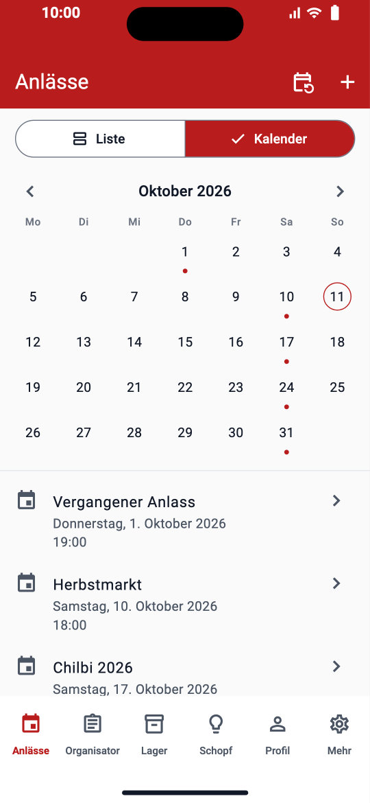
Ein Anlass im Detail
Ein Tipp auf einen Anlass öffnet alles, was du wissen musst: Datum, Zeit, Ort, Kosten, wer organisiert, bis wann man sich anmelden kann und eine Beschreibung.
Hat der Anlass Schichten, stehen sie darunter, jede mit ihrem Stand: 3 Plätze frei oder voll.
Die Knöpfe unten
- Helfen — du trägst dich für Schichten ein.
- Anmelden — du meldest dich als Gast an (bei Anlässen ohne Schichten).
- Arbeitsplan ansehen — wer wann wo arbeitet. Oben rechts gibt es den Plan als PDF zum Speichern oder Weiterschicken.
Kann man sich nicht anmelden, steht unten stattdessen der Grund, zum Beispiel dass der Anmeldeschluss vorbei ist.
In den eigenen Kalender
Oben rechts das Kalender-Symbol Zum Kalender legt diesen einen Anlass in deinen Kalender.
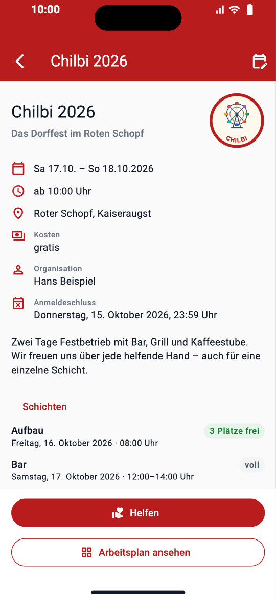
So meldest du dich für eine Schicht an
- Im Reiter Anlässe den Anlass antippen.
- Unten auf Helfen tippen.
- Unter «Schichten» eine oder mehrere Schichten ankreuzen. Volle Schichten lassen sich nicht wählen.
- Name, E-Mail und Telefon prüfen. Sie kommen aus deinem Profil und lassen sich hier ändern.
- Wenn nötig eine Bemerkung schreiben, etwa «Nur bis 19 Uhr».
- Anmeldung senden tippen.
Die Anmeldung geht an den Organisator. Er bestätigt sie — oder schlägt dir eine andere Schicht vor, wenn deine schon voll ist. Wie es steht, siehst du unter Meine Anmeldungen.
Als Gast anmelden
Heisst der Knopf Anmelden, geht es um deine Teilnahme. Du gibst an, mit wie vielen Personen du kommst, und kannst Allergien / Unverträglichkeiten vermerken. Dann Anmeldung senden.
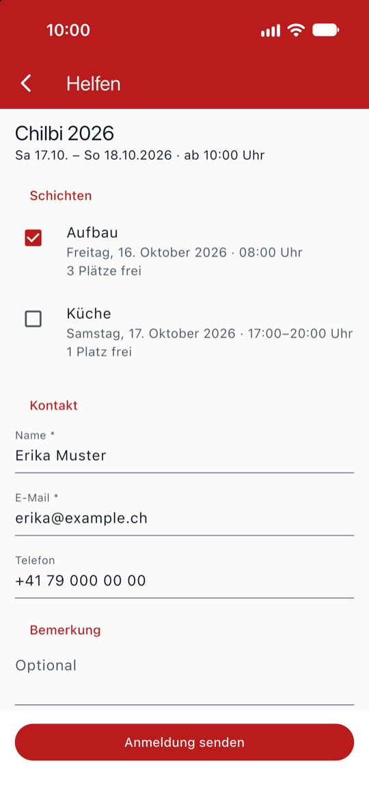
Meine Anmeldungen
Im Reiter Profil unter Meine Anmeldungen siehst du alles, wofür du dich eingetragen hast — mit Datum, Ort und deinen Schichten. Ein Tipp öffnet den Anlass.
Der farbige Vermerk rechts zeigt den Stand:
- offen — der Organisator hat noch nicht entschieden.
- bestätigt — du bist eingeteilt.
- abgelehnt — meist, weil die Schicht schon voll war.
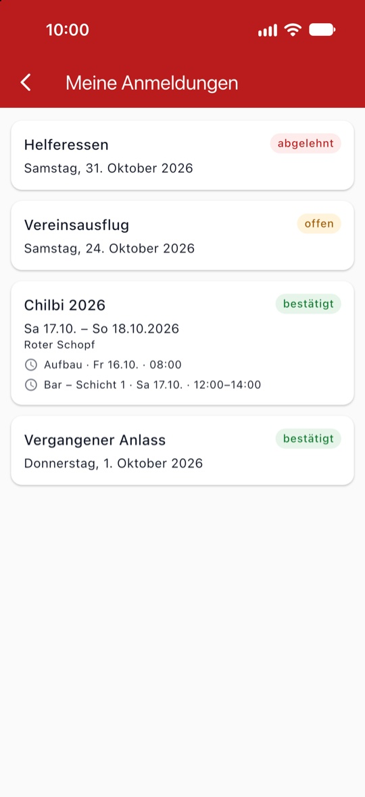
Profil und Foto
Der Reiter Profil zeigt, was der Verein von dir weiss: Kontakt, Adresse, Geburtstag, Status und IBAN.
Angaben ändern
- Oben rechts auf den Stift tippen — oder weiter unten auf Profil bearbeiten.
- Ändern, was nicht mehr stimmt: Name, E-Mail, Telefon, Adresse, Geburtstag, IBAN.
- Oben rechts Speichern tippen.
Profilfoto
In Profil bearbeiten wählst du Kamera oder Galerie. Die App verkleinert das Bild selbst. Mit Entfernen löschst du das Foto wieder.
Status und Funktion pflegt der Vorstand. Stimmt dort etwas nicht, sag ihm Bescheid.
Was sonst im Profil steht
- Meine Anmeldungen
- Material ausleihen und Meine Ausleihen
- unter «Konto»: Benachrichtigungen, Zugänge und VPN-Zugang
- ganz unten: Austritt beantragen
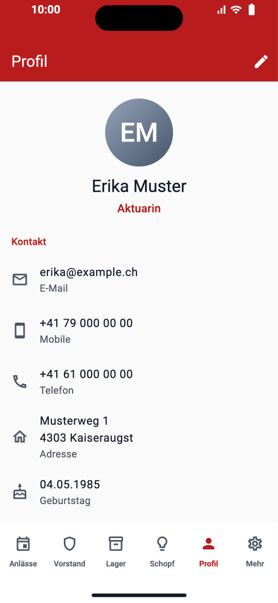
Benachrichtigungen
Im Profil unter Benachrichtigungen legst du fest, wovon du hören willst. Jeder Schalter gilt für sich:
- Schicht-Erinnerungen — Erinnerung und Änderungen bei deinen Schichten
- Anlass-Änderungen — Anmeldungen, Änderungen und Absagen von Anlässen
- Newsletter — Vereins-Newsletter und Rundmails
- Allgemeine Mitteilungen — sonstige Informationen vom Vorstand
Die Schalter werden sofort gespeichert.
Dieses Gerät
Unten steht, ob das Telefon Mitteilungen zeigen darf. Steht dort Mitteilungen erlauben, einmal antippen und zustimmen. Steht dort, dass Mitteilungen abgeschaltet sind, erlaubst du sie in den Einstellungen des Telefons.
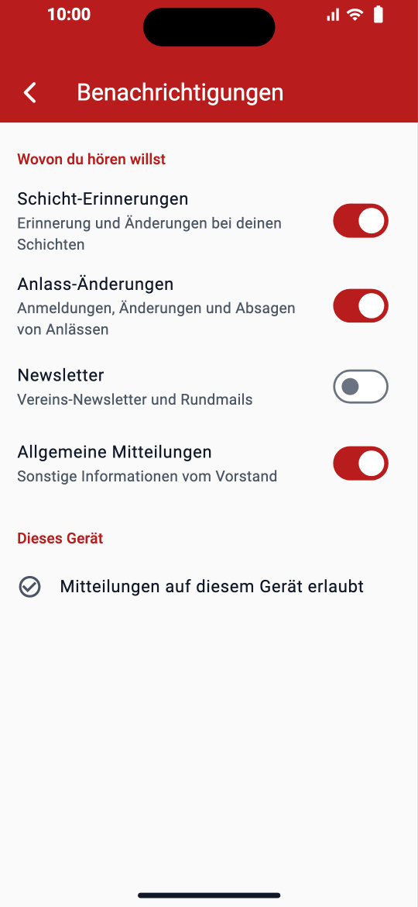
Zugänge
Im Profil unter Zugänge steht, wo du überall hineinkommst. Was du siehst, hängt von deiner Funktion ab. Die meisten Mitglieder sehen nur «Systeme».
- Systeme — Website, Cloud und weitere, mit deiner Rolle. Ein Tipp öffnet sie.
- Funktions-E-Mails — etwa
aktuar@fwv-raura.ch, mit Server und Passwort. - Cloud-Ordner — welche Ordner in der Cloud du siehst.
- Netzlaufwerk — Adresse, Benutzer und Passwort für die Dateiablage.
- Geteilte Konten — Zugänge, die mehrere gemeinsam nutzen.
Passwort einer Funktions-E-Mail ändern
- Bei der Funktions-E-Mail auf Passwort ändern tippen.
- Das Neue Passwort zweimal eingeben, mindestens 12 Zeichen.
- Passwort setzen tippen. Es gilt sofort — auch für alle anderen, die dieses Postfach nutzen.
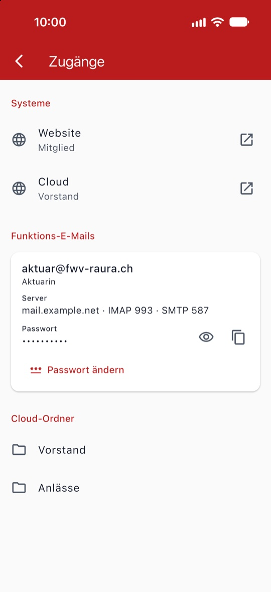
VPN-Zugang
Über VPN verbindet sich dein Gerät mit dem Vereinsnetz — für die Dateiablage und das Netz im Roten Schopf. Nur der Vereinsverkehr läuft durch; dein übriges Surfen bleibt, wie es ist.
Du brauchst dazu die kostenlose App WireGuard aus dem App Store oder Play Store.
- Im Profil auf VPN-Zugang tippen.
- Einen Gerätenamen eingeben, zum Beispiel
handyoderlaptop. - Zugang erstellen tippen.
- In WireGuard öffnen tippen und die WireGuard-App wählen. Dort den Tunnel einschalten.
Unter «Deine Geräte» siehst du alle Zugänge. Mit dem Papierkorb entfernst du einen — das Gerät kommt danach nicht mehr ins Vereinsnetz.
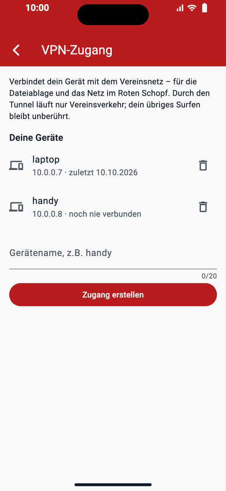
Material ausleihen
Festbänke, Geschirr, ganze Kisten: Was der Verein im Lager hat, kannst du selbst ausleihen. Jedes Mitglied darf das.
- Im Profil auf Material ausleihen tippen.
- Den Zeitraum wählen — vom Abholen bis zum Zurückbringen. Ändern geht oben mit Ändern.
- Die App zeigt, was in dieser Zeit frei ist. Bei Artikeln die Menge mit + und − einstellen, ganze Kisten ankreuzen.
- Weiter tippen.
- Alles prüfen, wenn du willst eine Notiz schreiben (wofür, Abholzeit) und Verbindlich ausleihen tippen.
Die Ausleihe ist damit sofort reserviert. Das Lager wird benachrichtigt, und du bekommst eine Bestätigung per E-Mail.
Meine Ausleihen
Gleich darunter im Profil: Meine Ausleihen. Dort siehst du, was du reserviert oder abgeholt hast.
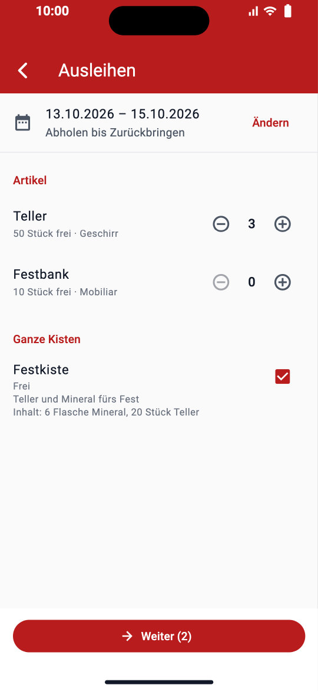
Austritt beantragen
Ganz unten im Profil steht Austritt beantragen.
- Wenn du willst, ein Wunschdatum und eine Begründung angeben. Beides ist freiwillig.
- Unten auf Austritt beantragen tippen.
- Die Rückfrage mit Antrag senden bestätigen.
Der Antrag löscht nichts und beendet nichts. Er geht an den Vorstand. Deine Mitgliedschaft und deine Daten bleiben bestehen, bis der Vorstand gemäss Statuten entschieden hat.
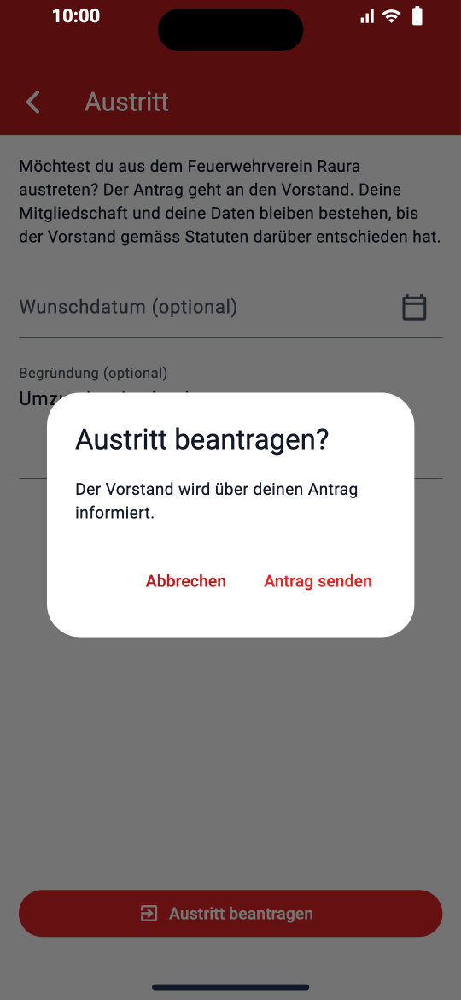
Mehr: die Einstellungen
Der letzte Reiter heisst Mehr. Oben steht, mit welchem Konto du angemeldet bist. Darunter:
- Musik — Playlists und Radio, siehe Musik.
- Bildschirm Roter Schopf — live sehen, was auf dem Laptop im Lokal läuft. Wer den Reiter Schopf hat, findet ihn dort.
- Gruppen verwalten — nur für den Vorstand, siehe Für den Vorstand.
- Newsletter abonniert — der Schalter meldet dich beim Vereins-Newsletter an oder ab.
- Adressbuch — die Mitglieder in deine Kontakte, siehe nächstes Kapitel.
- Hilfe, Version und Abmelden.
Im Browser heisst dieser Reiter Einstellungen. Musik und Gruppen stehen dort als eigene Einträge in der Leiste.
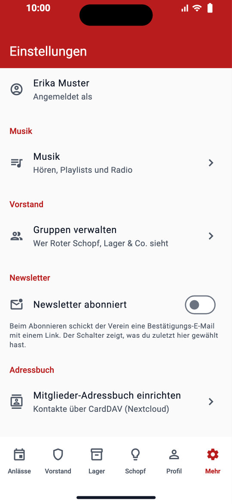
Mitglieder im Adressbuch
Du kannst alle Mitglieder in die Kontakte deines Telefons holen. Dann zeigt es bei einem Anruf den Namen statt einer unbekannten Nummer. Die Kontakte bleiben von selbst aktuell.
Android: Kontakte abgleichen
Nach der ersten Anmeldung fragt die App: «Mitglieder ins Adressbuch übernehmen?» Mit Ja, übernehmen ist es erledigt.
Später geht es unter Mehr → «Adressbuch» mit dem Schalter Kontakte abgleichen. Die Mitglieder stehen dann im Konto «FWV Raura».
- Jetzt abgleichen holt sofort den neusten Stand.
- Gelöschte wiederherstellen holt Kontakte zurück, die du von Hand gelöscht hast.
- Schalter aus oder abmelden: Die FWV-Kontakte verschwinden wieder vom Telefon.
iPhone und Computer: über die Cloud
Hier richtest du das Adressbuch einmal als Konto ein. Unter Mehr auf Mitglieder-Adressbuch einrichten tippen.
- Am einfachsten: Profil installieren. Safari lädt ein Profil; in den Einstellungen des iPhones bestätigen und das Cloud-Passwort eingeben. Der Hinweis «Nicht verifiziert» ist normal.
- Oder von Hand: Die App zeigt den Server
nextcloud.fwv-raura.chund die Schritte einzeln.
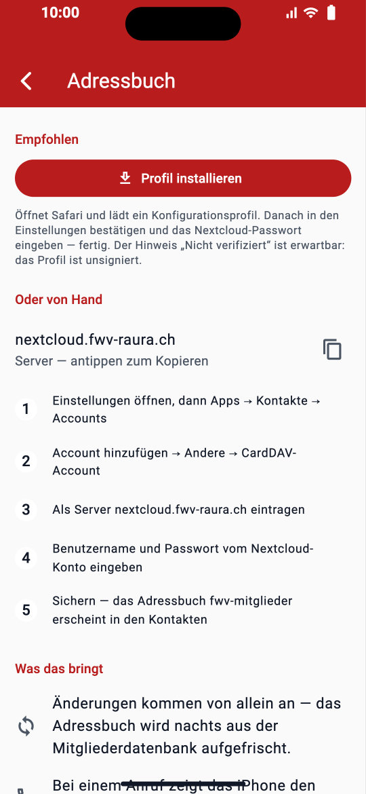
Hilfe, Version, Abmelden
Ganz unten unter Mehr:
- Hilfe — die Anleitungen des Vereins: diese hier, die zur Website, zum ersten Passwort und zur Cloud. Ein Tipp öffnet sie im Browser.
- Version — welche Fassung der App du hast. Das hilft, wenn du einen Fehler meldest.
- Abmelden — meldet dich ab. Im Browser auch auf der Website.
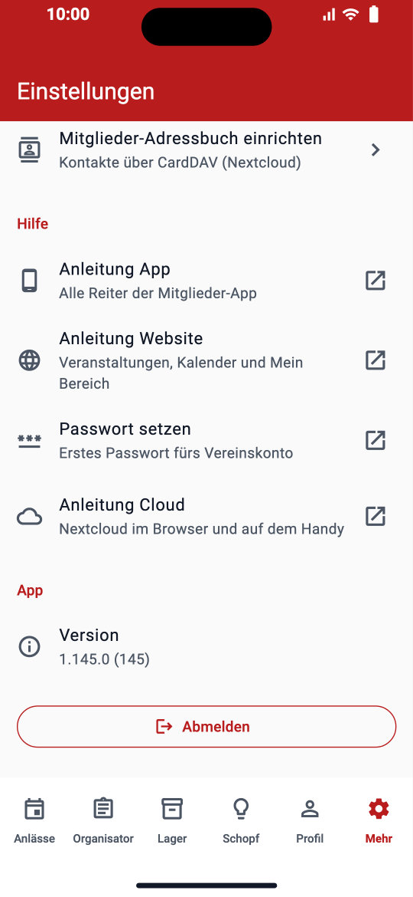
Musik
Im Roten Schopf spielt ein Laptop die Musik. Was er spielt, stellen die Mitglieder zusammen — auch du. Du findest es unter Mehr → Musik.
Playlists
- Alle Titel spielt die ganze Sammlung zufällig.
- Das Dreieck neben einer Playlist spielt sie auf deinem Telefon ab — zum Vorhören.
- Neue Playlist: Namen geben, über Titel suchen Lieder hinzufügen, dann speichern.
- Mit dem Papierkorb löschst du eine Playlist. Sie verschwindet dann auch vom Laptop im Lokal.
Radiosender
Im zweiten Reiter Radiosender stehen die Sender, die der Laptop kennt. Auch die kannst du auf dem Telefon hören.
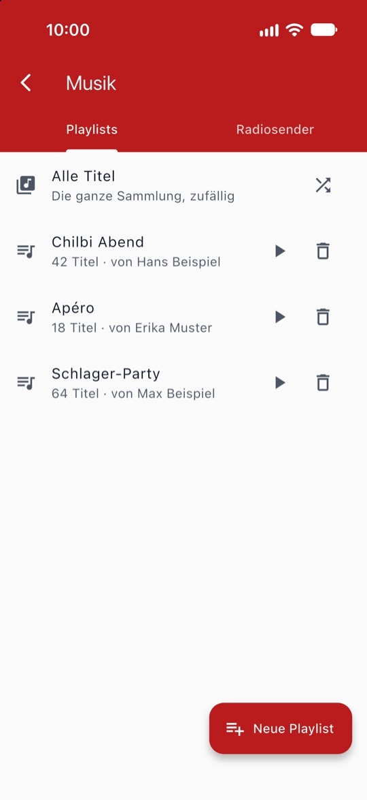
Nur für Organisatoren
Für Organisatoren
Organisierst du einen Anlass, bekommst du den Reiter Organisator. Der Verein erkennt das am Anlass selbst — du musst nichts einschalten.
Der Reiter zeigt deine Anlässe, aktuelle zuerst. Auf jeder Karte steht, wie viele Anmeldungen bestätigt und wie viele noch offen sind und wie viele Personen kommen. Der gelbe Vermerk «1 offen» heisst: Da wartet jemand auf deine Antwort.
Ein Tipp auf einen Anlass öffnet die Verwaltung — siehe nächste Seite.
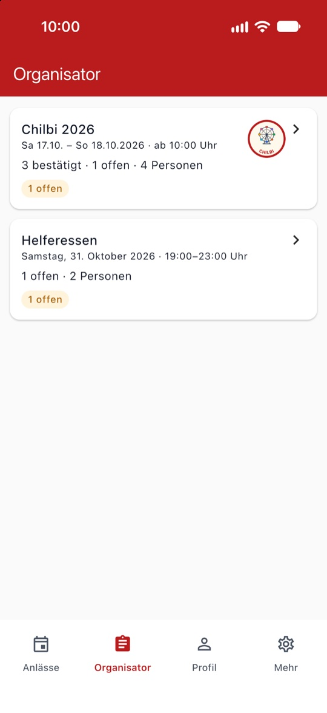
Nur für Organisatoren
Einen Anlass verwalten
Oben stehen bis zu vier Reiter. Welche du siehst, hängt vom Anlass ab.
Anmeldungen
Jede Anmeldung zeigt Name, Schichten, Bemerkung und Kontakt. Darunter die Knöpfe:
- Bestätigen oder Ablehnen — die Person bekommt eine Nachricht.
- Ändern — Angaben oder Schichten anpassen.
- Andere Schicht — einen Vorschlag schicken, wenn eine Schicht voll und eine andere leer ist.
- Person (unten rechts) — jemanden eintragen, der telefonisch zugesagt hat. Mitglied oder Gast.
Oben über den Anmeldungen:
- Informieren — allen Angemeldeten eine Nachricht schicken. Danach zeigt die App, wen sie per E-Mail, per Post oder in der App erreicht hat und wen nicht.
- PDF — Teilnehmerliste, Arbeitsplan oder Aushang.
- Arbeitsplan senden — alle eingeteilten Helfer bekommen den Plan per E-Mail oder Post.
Schichten, Notizen, Material
- Schichten — anlegen, ändern, löschen. Eingeteilte erfahren es automatisch.
- Notizen — für dich und den Vorstand, auch mit Fotos von Quittungen oder Plänen.
- Material — Rezepte und Material für den Anlass, daraus die Einkaufsliste.
Oben rechts der Stift: Anlass bearbeiten.
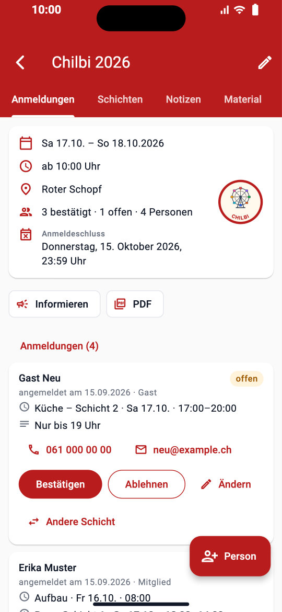
Nur Gruppe Lager und Vorstand
Lager
Der Reiter Lager zeigt den Bestand des Vereins. Oben gibt es drei Reiter:
- Artikel — alles im Lager mit Menge und Ort. Oben suchst du nach Name oder Code.
- Lagerorte — was wo steht.
- Nachbestellen — was knapp ist.
Unten rechts Scannen: Strichcode eines Artikels vor die Kamera halten, und die App öffnet ihn. Oben rechts legst du einen neuen Artikel an.
Ausleihen verwalten
Das Symbol mit den Händen oben rechts öffnet die Ausleihen. Dort gibst du Material aus, nimmst es zurück oder sagst eine Ausleihe ab. Mit Für Externe erfasst du eine Ausleihe für jemanden ausserhalb des Vereins.
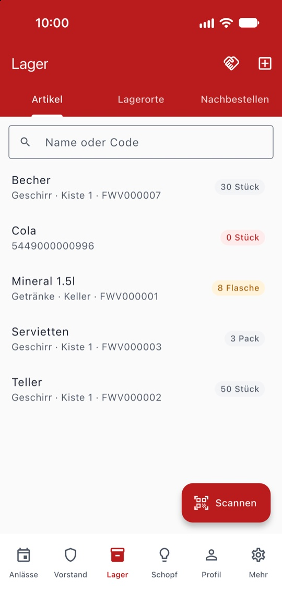
Gruppe Roter Schopf, Vorstand — oder während deiner Schicht
Roter Schopf: Licht
Der Reiter Schopf steuert das Lokal. Du siehst ihn, wenn du in der Gruppe Roter Schopf oder im Vorstand bist.
Hast du eine bestätigte Schicht, erscheint er auch für dich — eine Stunde vor Beginn bis eine Stunde nach dem Ende. Oben steht dann, für welche Schicht und bis wann.
Lampen schalten
- Unter «Gruppen» schaltest du Spots oder Arbeitsleuchten alle zusammen.
- Unter «Einzelne Lampen» jede Lampe für sich. Eine gelbe Birne heisst: Sie brennt.
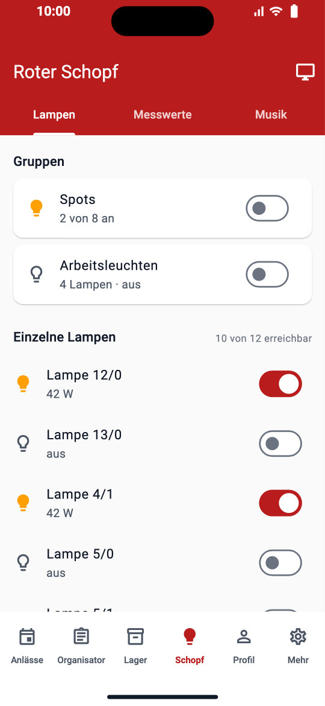
Gruppe Roter Schopf, Vorstand — oder während deiner Schicht
Roter Schopf: Messwerte, Musik, Bildschirm
Messwerte
Hier siehst du den Strom im Lokal, die Temperatur der Tiefkühler und die Heizung. Ein rot hinterlegter Tiefkühler meldet ein Problem — etwa, dass sein Fühler keinen Wert liefert.
Die Werte sind nur zum Ansehen. Einen Tiefkühler kann man in der App nicht ausschalten.
Musik im Schopf
Der dritte Reiter steuert den Laptop im Lokal: was gerade läuft, Pause und Weiter, Lautstärke, eine Playlist oder einen Sender starten.
Bildschirm
Oben rechts das Bildschirm-Symbol: Bildschirm Roter Schopf. Damit siehst du im Browser live, was auf dem Laptop läuft. Steuern mit Tastatur und Maus darf nur der Vorstand.
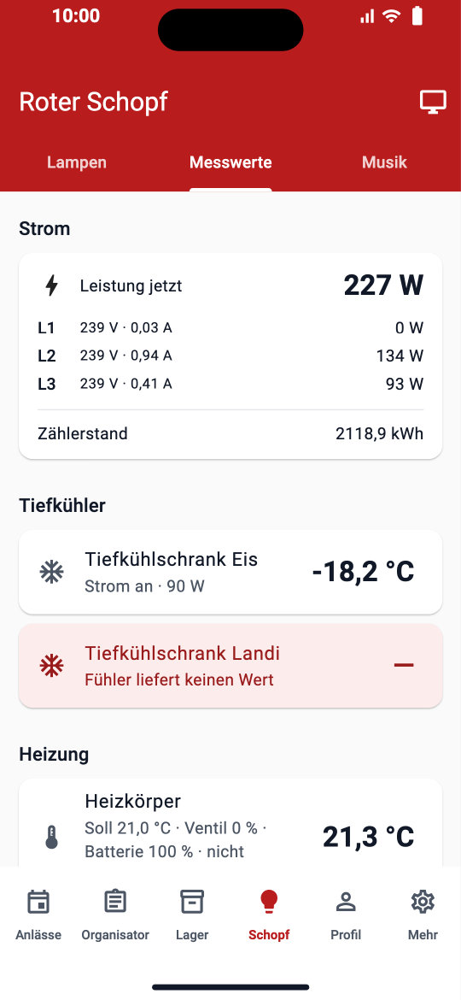
Nur für den Vorstand
Für den Vorstand: Gruppen verwalten
Wer in welcher Gruppe ist, entscheidet, was er in der App sieht — etwa die Gruppe «Roter Schopf» den Reiter Schopf oder «Lager» das Lager. Der Vorstand pflegt diese Gruppen selbst.
- Unter Mehr auf Gruppen verwalten tippen. Im Browser steht Gruppen direkt in der Leiste links.
- Die Gruppe antippen.
- Mit Aufnehmen ein Mitglied hinzufügen, mit dem Symbol daneben jemanden entfernen.
Gruppen mit dem Vermerk automatisch setzt das System nach der Funktion des Mitglieds. Eine Änderung von Hand kann beim nächsten Abgleich wieder verschwinden. Aufnehmen kann man nur Mitglieder mit einem Vereinskonto.
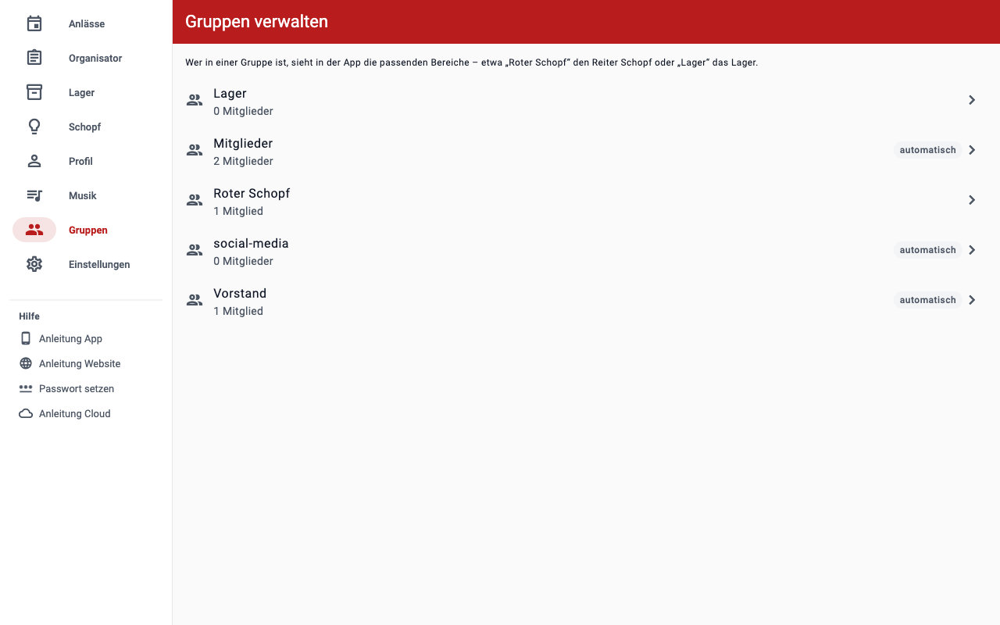
Android, iPhone und Browser im Vergleich
Die App kann überall dasselbe. Ein paar Dinge laufen je nach Gerät anders:
| Thema | Android | iPhone | Browser |
|---|---|---|---|
| Installieren | Play Store (Test) oder Datei | vorerst über den Browser | fwv-raura.ch/mein.html |
| Reiter | unten | unten | links bei breitem Fenster |
| Mitglieder im Adressbuch | Kontakte abgleichen | über die Cloud (CardDAV) | über die Cloud (CardDAV) |
| Mitteilungen aufs Gerät | ja | siehe Benachrichtigungen → «Dieses Gerät» | nein, per E-Mail |
Der Unterschied beim Adressbuch hat einen technischen Grund: Auf dem iPhone darf keine App selbst Kontakte anlegen. Dort richtet man das Adressbuch einmal als Konto ein — danach bleibt es genauso aktuell.